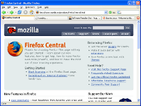
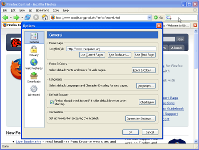
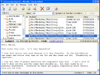
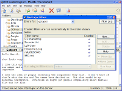
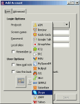
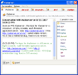

หมวดซอฟต์แวร์ :
สนับสนุนโดย :
อินเทอร์เน็ต
Firefox
โปรแกรม web browser ที่ให้คุณท่องโลก internet ได้รวดเร็ว ปลอดภัย และ มีประสิทธิภาพ การเปิดหน้าเวบได้หลายๆ tab พร้อมกันในหน้าต่างเดียว toolbar สามารถปรับแต่งได้ตามความต้องการ คุณสามารถเพิ่มความสามารถให้ Firefox ได้ด้วย extension ที่มีอยู่มากมาย ทำให้คุณสามารถสร้างประสบการณ์ท่องเน็ตได้ด้วย เหตุผลที่ควรจะใช้ Firefox คือ ความปลอดภัย ทำให้ computer ปลอดภัยจาก spyware และยังมีเครื่องมือด้านความปลอดภัยที่ครอบคลุมการทำงาน ทำให้ คุณมีความเป็นส่วนตัวมากขึ้น 
{kind=link}
{kind=link}
Thunderbird
อ่านเมลที่คุณต้องการอ่านจริงๆ ด้วยเครื่องมือที่เรียนรู้จากคุณว่าอะไรเป็นเมลขยะ Thunderbird ช่วยให้คุณใช้เวลาน้อยลงในการจัดการอีเมล ด้วยเครื่องมืออำนวยความสะดวกมากมายในการจัดการและค้นหาอีเมล ถ้ามีคนหรือข้อความที่คุณต้องค้นหาบ่อยๆ คุณสามารถบันทึกมันเป็นโฟลเดอร์ที่เปิดดูได้ทันที ด้วยรูปแบบการใช้งานที่คุณคุ้นเคย Thunderbird ยังช่วยป้องกันคุณจากไวรัส และอันตรายต่างๆ ถ้าความสามารถของโปรแกรมยังไม่เพียงพอ คุณก็สามารถติดตั้ง extension ให้กับมันได้อย่างไม่จำกัด 
{kind=link}
{kind=link}
Pidgin
เป็นโปรแกรม instant messenger (IM) ที่รองรับหลายโปรโตคอล คุณสามารถใช้มันเพื่อ chat กับคนอื่นผ่านโปรโตคอล MSN Messenger, ICQ, AIM, Yahoo!, IRC, Jabber, Gadu-Gadu, SILC, GroupWise Messenger และ Zephyr network ผู้ใช้ Pidgin สามารถ log-in หลาย account พร้อมกัน เพื่อเชื่อมต่อกับหลายเครือข่ายในเวลาเดียวกัน ดังนั้นถ้าคุณมีเพื่อนอยู่คนละเครือข่าย คุณสามารถคุยกับพวกเขาทั้งหมดพร้อมกันได้โดยอาศัยโปรแกรมเพียงโปรแกรมเดียว 
{kind=link}
{kind=link}